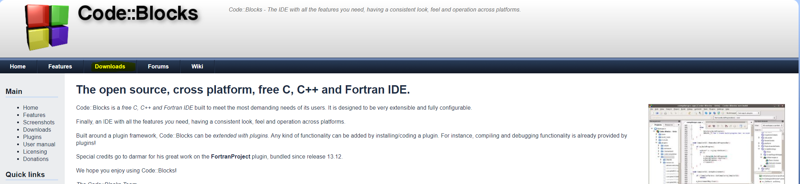
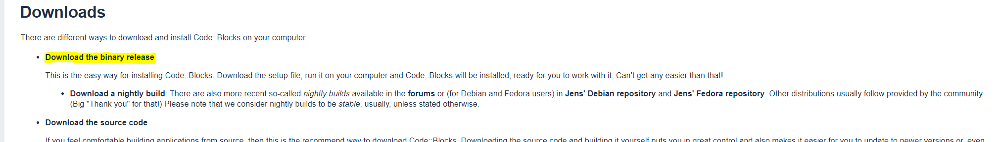
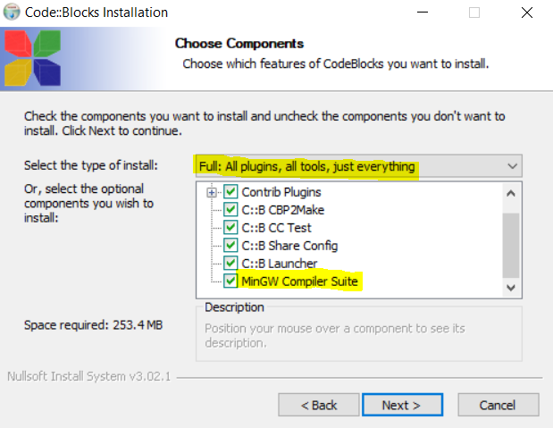

ENTORNS DE PROGRAMACIÓ
Instal·lació del Code::Blocks
A la hora de programar es recomana utilitzar un entorn de programació, en el nostre cas utilitzem el
Code::Blocks, un entorn lliure. El procés d'instal·lació és molt senzill:
Instal·lació:
El primer pas que hem de fer és accedir a la web official del Code::Blocks.Enllaç a la web. Un cop som a dins seguirem els seguents passos:
- 1. Accedir a l'apartat de downloads que trobarem a la barra superior d'indexs.

- 2. Escollir la opció d'agafar els binaris que trobem com a primera opció:

- 3. Veurem que ens deixa escollir diferents opcions, si sou usuaris de Mac o Linux, us recomanem que mireu la secció de XCode. Si sou usuaris de Windows, aleshores podem seguir sense problema aquest procés. De les opcions de descàrrega escollirem l'opció complerta, que està sota el nom: codeblocks-17.12mingw-setup.exe .
- 4. Veurem que comença la descàrrega, un cop s'hagi completat, obrirem l'arxiu descarregat. Es possible que us doni error, si això passa és que probablement no s'ha descarregat correctament i cal tornar a descarregar.
Si en canvi no us mostra cap error, aleshores seguirem el procés d'instal·lació fins arribar a la següent pantalla:

Com es mostra a la imatge és imprescindible que hi hagi MinGw Suit Compiler activat. Recomanem que hi hagi l'opció de Full que es mostra a la imatge.
- Veurem que comença el procés d'instal·lació del software. Un cop hagi finalitzat i l'executem, el primer de tot sortirà que ens vol auto-detectar el compilador. Si hem escollit l'opció correcta d'instal·lació, veurem que hi ha GNU CC Compiler amb estat Detected. Si no és així, aleshores segurament no hem seguit correctament el procés d'instal·lació i cal tornar a començar.(Recordeu a desinstal·lar el software actual).
Un cop hem fet tot aquest procés d'instal·lació correctament ja podem utilitzar el Code::Blocks.